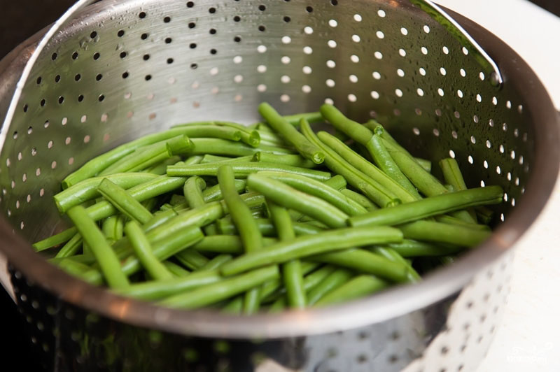
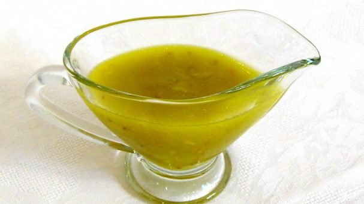
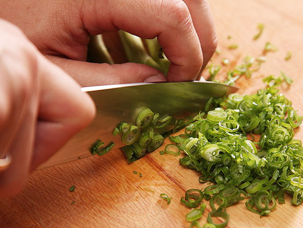
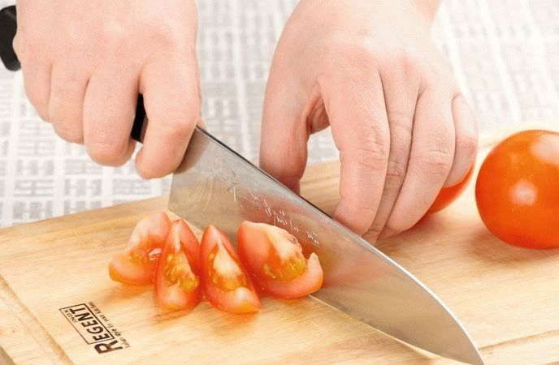
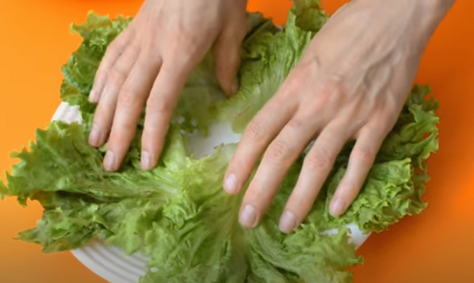
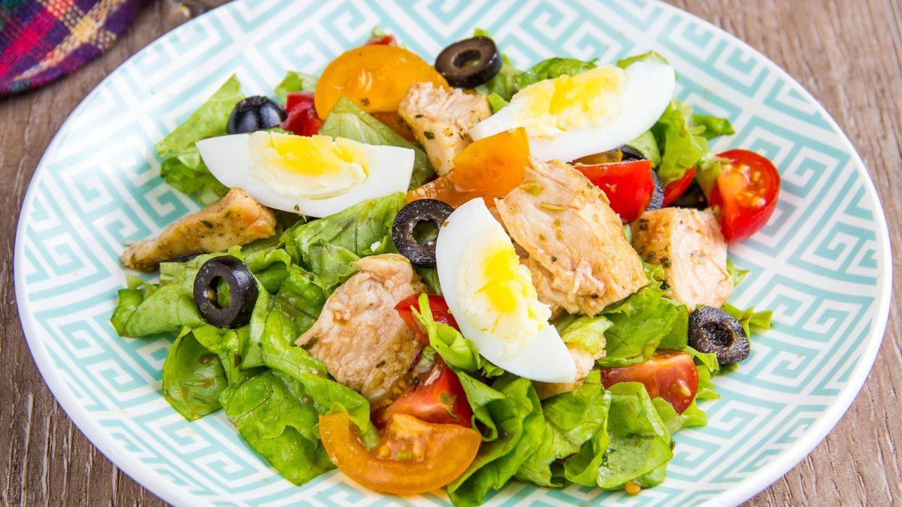

Шаг 1

Картофель тщательно вымыть и отварить в мундире до готовности, 20
мин., слить воду, полностью остудить. Тем временем петрушку и
базилик вымыть, обсушить. Петрушку измельчить. Базилик разобрать на
листики. Фасоль поместить в дуршлаг и опустить на 7 мин. в кипящую,
чуть подсоленную воду. Промыть стручки ледяной водой, затем
обсушить. Поместить фасоль в миску, посыпать измельченной петрушкой,
полить лимонным соком и отставить.
Шаг 2

Приготовить заправку. Чеснок очистить и измельчить. Смешать в
отдельной миске чеснок, горчицу, сахар, уксус и оливковое масло.
Посолить, поперчить. Накрыть и дать настояться в холодильнике 15
мин.
Шаг 3

Зеленый лук и салат вымыть, обсушить. Лук нарезать колечками. Салат
разобрать на листья. Выложить ими большое блюдо. Сбрызнуть 2 ст. л.
приготовленной заправки.
Шаг 4

Остывший картофель и яйца очистить и нарезать дольками. Помидоры
вымыть и нарезать дольками такого же размера, как картофель. Маслины
разрезать на половинки или нарезать колечками.
Шаг 5

Положить на блюдо с салатными листьями слой картофеля, затем слой
стручков фасоли, яйца, маслины и помидоры, посыпая каждый слой
колечками зеленого лука.
Шаг 6

Полить овощи приготовленной заправкой. Анчоусы хорошо промокнуть от
соуса и положить сверху на овощи. Украсить салат листиками базилика.
Перед тем как готовить салат, попробуйте анчоусы на соль. Если рыбки
очень соленые, промойте их от рассола теплой водой, а затем
тщательно обсушите. И на всякий случай уменьшите количество соли в
заправке. Лучше потом досолить, чем подать пересоленное блюдо.